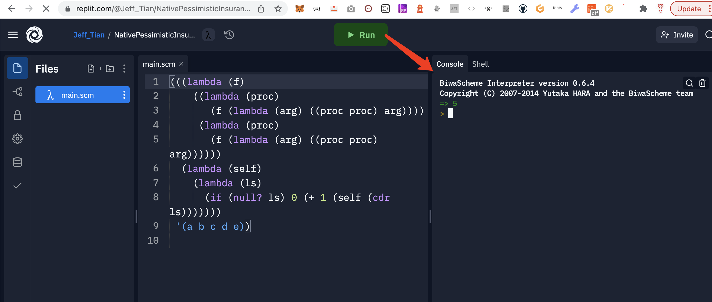

https://sicp.jiwai.win
我在学习《计算机程序的构造与解释》时做的练习
缘由
凡是我不能拿来创建的，都是我还没有理解的。
学以致用
学习了 SICP，现炒现卖，已经能回答一些知乎上的问题了：
- 对你影响最深的编程书籍是哪一本？ - Jeff Tian的回答 - 知乎
- 怎么理解邱奇计数？ - Jeff Tian的回答 - 知乎
- 《计算机程序的构造与解释》、scheme lisp 怎么编出一个可执行的hello world 程序？ - Jeff Tian的回答 - 知乎
- 怎么徒手计算正切函数tanx与对数函数的近似值? - Jeff Tian的回答 - 知乎
- 有哪些高中生好写的IT程序? - Jeff Tian的回答 - 知乎
一起学习
线上集成环境
现代化的学习工具有很多，首推 replit。

本地 Scheme 环境
Racket有个语言包就叫sicp ，专门给看这本书用的
https://docs.racket-lang.org/sicp-manual/index.html
收到的感谢和关注
本站建设还在进行中，已经收到一些感谢和陆续收到一些人的关注，这给了我很大的动力！
微信群
我加入了一个 SICP 微信群，你也想加入的话，可以先添加我的微信，我再邀请你进入：

也欢迎关注我的订阅号

点击 链接 可以查看我写的关于 SICP 的文章。